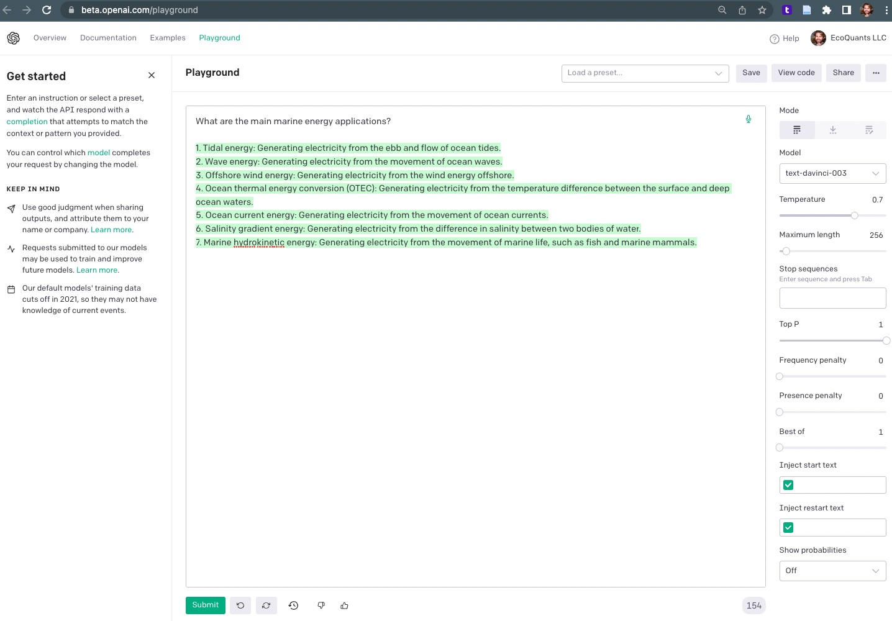

openai R package
Code
librarian::shelf(
jsonlite, listviewer, irudnyts/openai,
quiet = T)
api_key_txt <- "/Users/bbest/My Drive/private/openai.com_api-key_ben@ecoquants.com.txt"
Sys.setenv(OPENAI_API_KEY = readLines(api_key_txt))
# Sys.getenv("OPENAI_API_KEY")
a1_json <- "data/openai/a1.json"
if (!file.exists(a1_json)){
a1 <- create_completion(
engine_id = "text-davinci-003",
prompt = "What are the main marine energy applications?")
write_json(a1, a1_json)
}
a1 <- read_json(a1_json)
# show results
jsonedit(a1)
OpenAI Playground
What are the main marine energy applications?
- Tidal energy: Generating electricity from the ebb and flow of ocean tides.
- Wave energy: Generating electricity from the movement of ocean waves.
- Offshore wind energy: Generating electricity from the wind energy offshore.
- Ocean thermal energy conversion (OTEC): Generating electricity from the temperature difference between the surface and deep ocean waters.
- Ocean current energy: Generating electricity from the movement of ocean currents.
- Salinity gradient energy: Generating electricity from the difference in salinity between two bodies of water.
- Marine hydrokinetic energy: Generating electricity from the movement of marine life, such as fish and marine mammals.

Pricing
- Single request: text-davinci, 1 request, 8 prompt + 146 completion = 154 tokens = $0.00308